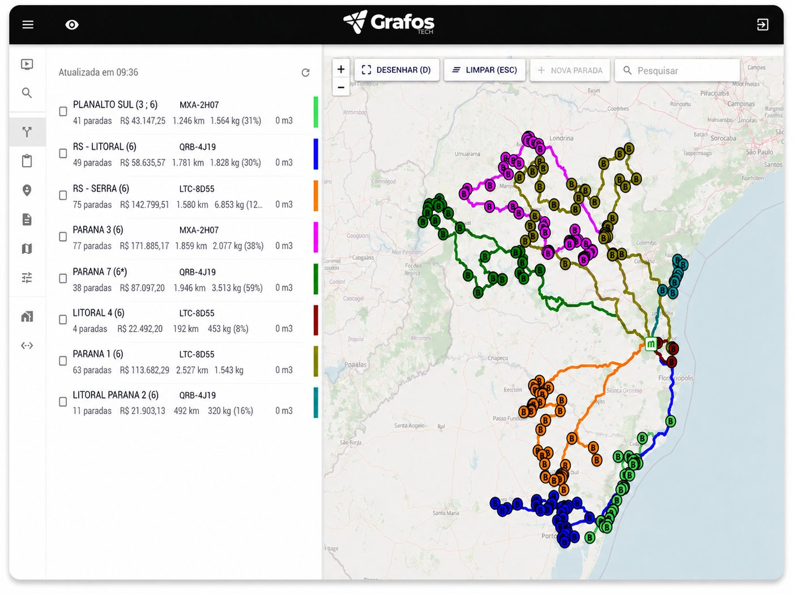
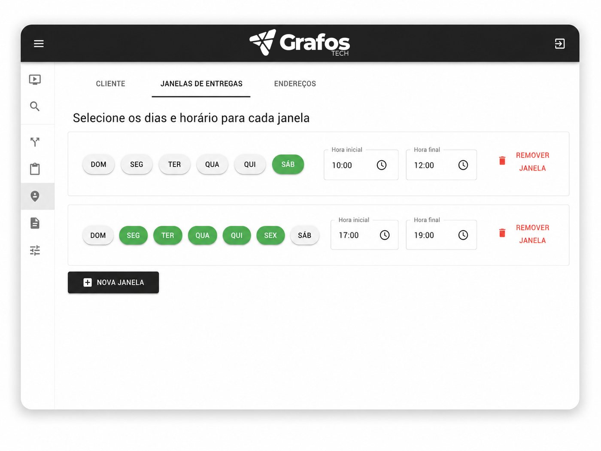

As rotas do dia prontas em minutos, não em horas.
Hoje alguém pega as notas fiscais e coloca as paradas em ordem, motorista por motorista. Na Grafos, os pedidos chegam do seu ERP e a sequência de cada rota sai calculada. O analista só revisa e libera.


Das notas do dia à rota no celular do motorista.
- Os pedidos e as notas fiscais chegam direto do seu ERP, sem planilha e sem troca de arquivo.
- As rotas já vêm pré-montadas por região, com quilometragem, peso, cubagem e valor de cada uma.
- O cálculo respeita a janela de entrega de cada cliente e a capacidade de cada veículo.
- Quer mudar algo? Arraste no mapa, fixe a primeira ou a última parada, ou passe uma entrega para outro veículo.
- Liberou, a rota volta para o ERP e vai direto para o app do motorista.
Numa distribuidora cliente, montar as rotas levava 4 horas por dia.
Eram 2 pessoas, 2 horas cada, colocando nota por nota em ordem. Com a Grafos, 1 pessoa faz o mesmo trabalho em 1h30. O tempo que sobrou foi para outras tarefas da logística.
A rota não depende mais de quem tem tudo na cabeça.
Toda operação tem alguém que sabe que tal cliente só recebe de manhã e que caminhão grande não entra no centro. Quando essa pessoa sai de férias, a rota sai errada. Na Grafos, essas regras ficam cadastradas uma vez.
Janela e agendamento
O horário de recebimento fica no cadastro do cliente. Um agendamento pontual passa na frente da janela de sempre.
Ruas e áreas bloqueadas
Restrição de circulação por tipo de veículo entra no cálculo, sem depender da memória de ninguém.
Tempo de descarga que aprende
Começa com um tempo padrão e se ajusta sozinho pela média das últimas entregas em cada cliente.
Caminhão carregado na ordem certa
O relatório de carregamento sai na ordem inversa da entrega: o que é entregue primeiro entra por último.
O que muda no resultado.
Menos tempo montando rota
O tempo que a equipe gastava organizando notas vai para o que precisa de gente: atender cliente, resolver exceção, planejar a semana.
Menos quilômetro rodado
A ordem das paradas é calculada, não montada no olho. Menos quilômetro, menos combustível, menos desgaste do veículo.
Prazo que dá para prometer
Com a rota calculada antes da saída, o comercial sabe o que responder quando o cliente pergunta quando o pedido chega.
Perguntas sobre a roteirização
O que é roteirização de entregas?
É definir a ordem em que um veículo vai passar pelas paradas do dia, de forma a rodar menos e cumprir os horários. Um software de roteirização faz esse cálculo sozinho, levando em conta os endereços, as janelas de entrega e quanto cabe em cada veículo.
Preciso de alguém técnico para montar as rotas?
Não. Quem usa no dia a dia é o analista de logística, na distribuidora, ou a expedição, na autopeças. Os pedidos chegam do ERP, a Grafos calcula as rotas e os ajustes são feitos na própria tela.
A roteirização considera janelas de entrega?
Sim. O cálculo respeita o horário de recebimento de cada cliente e a capacidade de cada veículo.
Dá para ajustar a rota na mão?
Sim. A palavra final é sempre de quem conhece a operação: dá para reordenar paradas ou passar entregas de um veículo para outro.
Preciso mudar todo o meu processo de uma vez?
Não. Dá para começar espelhando a rota que já sai do seu ERP e passar a usar a roteirização automática aos poucos, conforme a equipe ganha confiança.
Em quanto tempo começo a usar?
A implantação leva em média de 30 a 45 dias, conforme a integração com o seu ERP e a agenda do seu time de TI. Desde a primeira semana, a montagem das rotas já fica mais rápida.
Traga as notas de um dia da sua operação.
Na demonstração, a gente mostra como essas entregas ficariam roteirizadas na Grafos.
Agendar demonstração